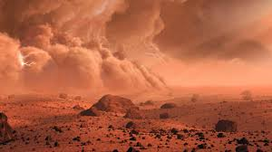

Marte el famosisimo planeta rojo esta disponible para viajar , embarcate en una aventura intelestelar a uno de los planetas mas vistosos donde podras ver númerosos fenomenos de la nauraleza como los maravillosos crateres , unas vistas del espacio expectaculares , un lugar donde podras sentirte como un superheroe gracias a la menor grabedad .
|  |
Marte es el cuarto planeta en orden de distancia al Sol y el segundo más pequeño del sistema solar, después de Mercurio. Recibió su nombre en homenaje al dios de la guerra de la mitología romana (Ares en la mitología griega), y también es conocido como «el planeta rojo» debido a la apariencia rojiza que le confiere el óxido de hierro predominante en su superficie. Marte es el planeta interior más alejado del Sol. Es un planeta telúrico con una atmósfera delgada de dióxido de carbono, y tiene dos satélites pequeños y de forma irregular